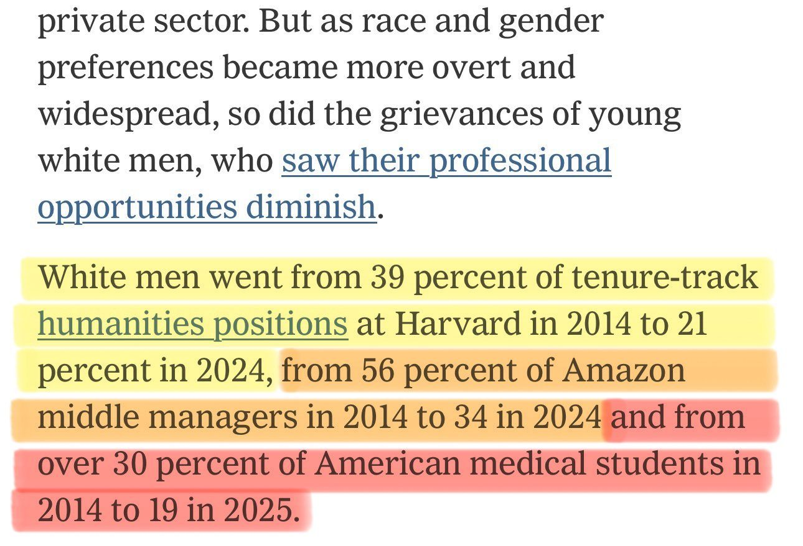

BREAKING: Judge allows Trump to end Temporary Protected Status for Somalis after 35 years.
USDA offered farmers funding to help transition from conventional to regenerative agriculture.
RFK Jr. says 26,000 farmers have already applied for the program.
USDA says it has never seen a response like it.
“USDA has allocated $700 million to help conventional farmers off-ramp and transition to regenerative agriculture.”
“Over 60,000 people contacted USDA to make inquiries, 26,000 applications.”
“They’ve never seen anything like this before.”
“We’re seeing tremendous interest within the conventional farming community.”
“It raises their profits per acre.”
“It lowers the cost of inputs like chemicals.”
“And it keeps them healthier, and they want healthy soils and healthy children.”
@gzchef
.@StephenM on the socialist infiltration of the Democrat Party: "This is a struggle for the survival of America... These actions collectively would bring America to its knees. It would cripple us, it would crush us, it would destroy everything 250 years of Patriots fought, bled, and died for."
Elon Musk says government censorship requests and restrictions will now be publicly visible through X’s open-source algorithm.
🇪🇸 Ceuta has turned into a slum
Thousands of illegal migrants living on the beach in shacks made of straw and cardboard
Health officials have issued an emergency alert over a severe sanitation crisis, treating cases of scabies, tuberculosis, impetigo and infectious diarrhea
🎉Approaching the anniversary of the 📡"Weekly Weather Warcast"⛈️, so here is (nearly) a year's worth of weather stitched together. ALL OF IT LOCKS INTO THIS GRID. Do you understand, yet? (turn the speed up, best stuff is at the end)
Anyone still pretending that an entire generation of young White men has not been systematically excluded from vast swaths of jobs, professions, industries, and institutions is either hopelessly uninformed or deliberately lying.

China put a SIGINT sat over the Pacific to spy on US test ranges. So the US flew USA 325 across the GEO belt into the same slot and closed to 14 km; close enough to photograph it and catch both ends of its ground link.
.@POTUS
"And as of this week, we've captured 9 out of 10 fugitives on the FBI's Most Wanted list, and that's a virtual record.”
Termination of TEMPORARY Protected Status is now in effect for the following countries.
For those with terminated TPS: LEAVE NOW or be DEPORTED.
Must Read:
“I arrested Laken Riley’s killer in NYC 6 months before her murder — sanctuary cities failed her and all Americans”
Judge blocks DHS from obtaining 17 million CDL rolls to facilitate the deportation of illegal immigrants.
Scott Bessent Makes the Economic Case for Mass Deportations
Russia is reportedly employing a new tactic.
“Zhduun” hides out of sight and uses a microphone to record passing vehicles.
SITUATION DETECTED: The U.S. is preparing to tell dozens of countries they must choose a side in the AI competition with China. Those that join Beijing’s AI framework will be excluded from the U.S. led Pax Silica initiative, according to an internal draft letter seen by Reuters.
BREAKING: South Korea proposes talks with North Korea to formally end the Korean War.
Hugh Hefner reportedly notified the FBI that a Playboy Playmate was s-xually ab-sed and traffıcked by Jeffrey Epstein and others in his orbit, according to court documents.
Anthony Fauci allegedly forced ABC News to scrap a story examining whether COVID-19 could have originated from a lab leak, according to former correspondent Terry Moran.
Congress says Harvard built a nonprofit to dodge foreign gift disclosure law